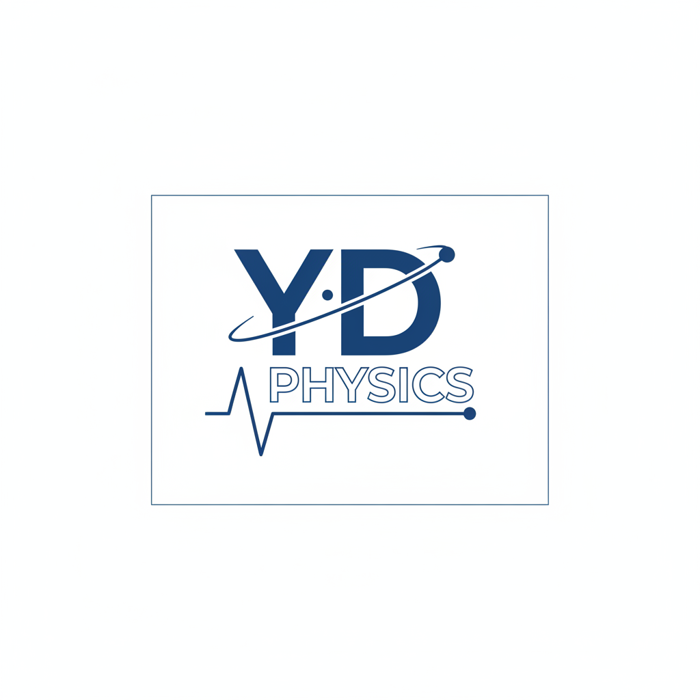

Medium 1
媒介 1
n₁ = 1.00
媒介 1
n₁ = 1.00
Medium 2
媒介 2
n₂ = 1.50
媒介 2
n₂ = 1.50
參數設定 (Controls)
Refractive Index of Medium 1 (n₁)
媒介1的折射率(n₁)
1.00
1.001.33
Refractive Index of Medium 2 (n₂)
媒介2的折射率(n₂)
1.ee
1.332.20
45°
0°89.9°
計算結果 (Results)
Angle of Refraction (r)
折射角(r):
折射角(r):
Snell's Law: n₁ sin(i) = n₂ sin(r)